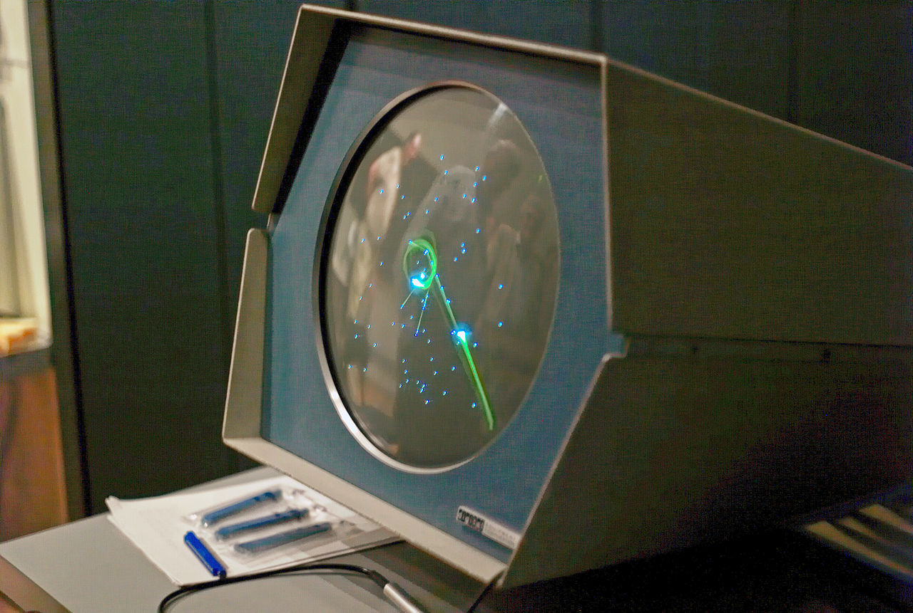

The history of video games goes as far back as the early 1950s, when academics began designing simple games, simulations, and artificial intelligence programs as part of their computer science research[citation needed]. Video gaming would not reach mainstream popularity until the 1970s and 1980s, when arcade video games, gaming consoles and home computer games were introduced to the general public. Since then, video gaming has become a popular form of entertainment and a part of modern culture in most parts of the world. As of 2015, there are eight generations of video game consoles, with the latest generation including Nintendo's "Wii U" , Microsoft's "Xbox One" and Xbox 360, and Sony's PlayStation 3 and "PlayStation 4". The earliest video games, by the popular and most all-encompassing definition of an interactive program incorporating both electronics and a display, developed as an outgrowth of computer research in fields such as artificial intelligence. As computer technology evolved through the 1940s, computers became both powerful and flexible enough to serve a variety of scientific functions.In 1951, the computer was commercialized in the United States by the UNIVAC division of typewriter company Remington Rand, paving the way for the adoption of the mainframe by academic institutions, research organizations, and corporations across the developed world.
 By 1960, the Massachusetts Institute of Technology (MIT) was one of the premiere centers of computer research in the world, home to both the Lincoln Laboratory and the Artificial Intelligence Laboratory. The former provided MIT with a custom-built transistorized computer, the TX-0, that was both smaller and more interactive than the typical mainframe, while the latter provided the institution with Steve Russell, who followed Artificial Intelligence Lab founder John McCarthy from Dartmouth College to MIT in 1958 to help him develop the LISP programming language. Steve Russell and his friends Martin Graetz and Wayne Wiitanen were attracted to the TX-0 as well, which in 1961 was joined by a PDP-1 from the Digital Equipment Corporation, a computer company established by former Lincoln Laboratory engineers. Equipped with a high-quality vector display, the PDP-1 offered the promise of more sophisticated visual hacks than the aging TX-0. Russell and friends, who were great fans of the science fiction novels of E.E. Smith, decided to exploit the new hardware by creating a game in which two human-controlled spaceships attempted to destroy each other by firing torpedoes. Dubbed Spacewar! (1962), this hack, programmed primarily by Russell with several crucial enhancements from members of the TMRC, became one of the first computer games to achieve national distribution when DEC decided to include it as a test program on every PDP-1 it sold. By the end of the 1960s, Spacewar! could be found in university computer labs across the United States and served as an inspiration for students to create their own variations of the game alongside entirely new designs. These creations remained trapped in the lab for the remainder of the decade, however, because even though some adherents of Spacewar! had begun to sense its commercial possibilities, it could only run on hardware costing hundreds of thousands of dollars. As computers and their components continued to fall in price, however, the dream of a commercial video game finally became attainable at the beginning of the 1970s.
Nowadays however, the gaming industry has advanced greatly and is continuing to advance at an exponentially increasing rate. Becasue of this, gamers known as "cyber-athletes" have appeared, who make a living out of playing video games. The Esport community is a vas, ever-growing one, that allows people to exploit their talents in the field while making money AND having fun doing what they enjoy doing. Anually, such a cyber-athlete can earn up to 150.000$ yearly, depending on how many championships he wins. They also get funded and sponsored by gaming-related companies like: Razer; AOC and even game developing companies like Blizzard and many others, on top of which they also get revenue from uploading videos on youtube or streaming. Despite all of these advantages, everything comes at a price, generally speaking, such a carrer cannot last a lot of time, since the person in question gets old and simply loses his reflexes and skill; not to mention you don't get state pension.
Ever since the first game has been completed, the gaming industry has been becoming more and more focused on money. At the very beggining, companies were much smaller, comprised of fewer programmers, enthusiastic abou opening up a new frontier in the field of programming, who did their absolute best to deliver a top-notch game for everyone to enjoy. Nowadays, on the other hand, mega-companies like EA, Activision and even Blizzard, only release games for gettiong money and sometimes release them incomplete; with bugs and even dare to ask for money to receive extra features (this is called a DLC). Recently, Steam (a purchasing platform for video games) and Bethesda (Skyrim's developer) got involved in a monstuous scandal, involving paying for mods for Skyrim. The entire community was outradged and given the proportions of the complaints, the mods quickly became free again. Even though this issue has been solved, it stands as testimony for the rotting society, the companies have built around what was once a pround gaming community.